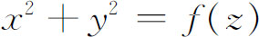
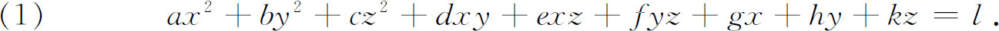
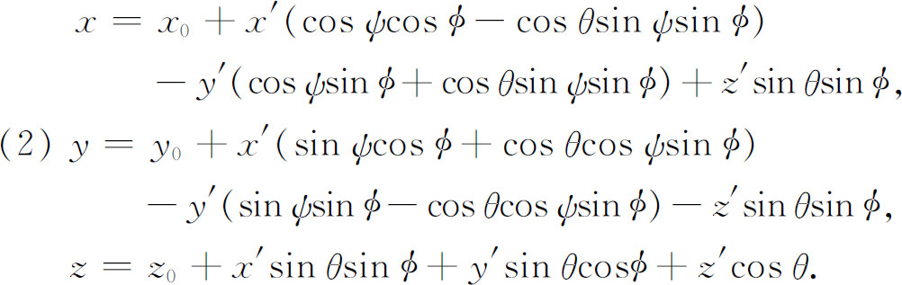
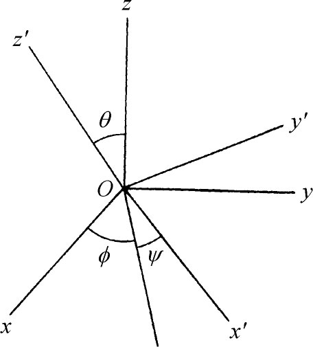
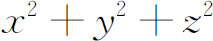
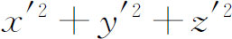
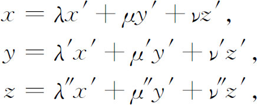
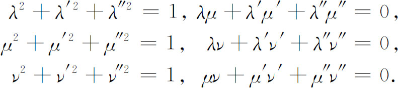

，ψ和θ表示出来的（图23.1）。角
，ψ和θ表示出来的（图23.1）。角 是x-y平面上从x轴到结点线（即x′-y′平面和x-y平面的交线）间的夹角，角ψ是x′-y′平面上x′轴和结点线间的夹角，角θ就是图中所示z和z′的夹角。因此包括平移在内的变换方程是
是x-y平面上从x轴到结点线（即x′-y′平面和x-y平面的交线）间的夹角，角ψ是x′-y′平面上x′轴和结点线间的夹角，角θ就是图中所示z和z′的夹角。因此包括平移在内的变换方程是2．基本解析几何
18世纪广泛地探讨了二维解析几何。初等平面解析几何的改善是容易总结的。牛顿和詹姆斯·伯努利对于特殊的曲线从本质上说已经引进并使用了所谓的极坐标系（第15章第5节），而赫尔曼则在1729年不仅正式宣布了极坐标的普遍可用，而且自由地应用极坐标去研究曲线。他还给出了从直角坐标到极坐标的变换公式。确切地讲，赫尔曼把p，cosθ，sinθ当作变量来使用，而且用z，n和m来表示p，cosθ和sinθ。欧拉扩充了极坐标的使用范围而且明确地使用三角函数的记号，欧拉那个时候的极坐标系实际上就是现代的极坐标系。
虽然一些17世纪的数学家——例如威特（Jan de Witt，1625—1672）在他的《曲线初步》（Elementa Curvarum Linearum，1659）中——确曾把x和y的某些二次方程化为标准型，斯特林在他的《牛顿的三次曲线》（Lineae Tertii Ordinis Neutonianae，1717）中则把x和y的一般的二次方程化为几种标准型。
在欧拉的《引论》（1748）中，他引进了曲线的参数表示，那里x和y是用第三个变量表示出来的。在这本著名的教科书中欧拉系统地讨论了平面坐标几何。
就我们所知道的，在费马、笛卡儿和拉伊尔的著作中能找到关于三维坐标几何细微的迹象。但真正的发展是18世纪的工作。尽管某些早期的工作，例如皮托（Henri Pitot）和克莱罗的工作，是和微分几何的发展有联系的，但我们在这里将只讨论真正的坐标几何。
第一件工作是改善拉伊尔关于三维坐标系的建议。约翰·伯努利在1715年给莱布尼茨的一封信中引进了我们现在通用的三个坐标平面。通过帕朗（An-toine Parent，1666—1716）、约翰·伯努利、克莱罗和赫尔曼的贡献（为了节省篇幅，这里不作详细介绍），弄清了曲面能用三个坐标变量的一个方程表示出来这个观念。克莱罗在他的《关于双重曲率曲线的研究》（Recherche sur les courbes à double courbure，1731）一书中不仅给出了一些曲面的方程，而且弄清楚了描述一条空间曲线需要两个曲面方程。他还看出过一条曲线的两个曲面方程的某种组合，例如，两个方程相加，给出过这条曲线的另一曲面的方程。利用这个事实，他说明怎样能够得到这些空间曲线的投影的方程，也就是求垂直于投影平面的柱面的方程。
二次曲面，例如球面、柱面、抛物面、双叶双曲面和椭球面，当然在1700年前就已经从几何上知道了；事实上，这些曲面中的某些已出现在阿基米德的著作中。克莱罗在他1731年的书中给出了这些曲面中某几个的方程。他还说明了x，y和z的齐次方程（各项的次数都相同）表示顶点在原点的一个锥面。对于这个结果，赫尔曼在1732年的一篇论文中(1)加上一条，即方程

是绕z轴的一个旋转曲面。克莱罗和赫尔曼首先都关心地球的形状，在他们那个时代，人们都相信地球是某种形状的椭球。尽管欧拉对曲面方程已经做过一些早期工作，但是系统地致力于三维坐标几何，还是在他的《引论》（1748）第二卷第5章的附录(2)中。他介绍了许多早已做过的工作，然后研究了一般的三个变量的二次方程

他企图通过坐标变换把这个方程化成这样的形式，使（1）所表示的二次曲面的主轴正好是坐标轴。他引进了从xyz-坐标系到x′y′z′-坐标系的变换，其方程是用角，ψ和θ表示出来的（图23.1）。角是x-y平面上从x轴到结点线（即x′-y′平面和x-y平面的交线）间的夹角，角ψ是x′-y′平面上x′轴和结点线间的夹角，角θ就是图中所示z和z′的夹角。因此包括平移在内的变换方程是

欧拉就用这个变换把（1）化成标准形，而且得到了六种曲面：锥面、柱面、椭球面、单叶和双叶双曲面、双曲抛物面（这是他发现的）以及抛物柱面。和笛卡儿一样，欧拉主张按方程的次数来进行分类是正确的原则；欧拉的理由是，次数是线性变换下的不变量。

图23.1
在对坐标轴变换问题继续进行工作之后，欧拉写了另一篇论文(3)，文中研究了把

变到
的变换。在这篇文章中欧拉——稍后一点拉格朗日在一篇关于球体引力的论文中(4)——给出了轴的旋转的对称形式的变换，即齐次线性正交变换
其中

这些带撇和不带撇的λ，μ，ν，用现代的术语来说，当然就是方向余弦。
蒙日的写作包含大量的三维解析几何的内容。他在1802年和他的学生阿谢特（Jean-Nicolas-Pierre Hachette，1769—1834）一起写的一篇论文《代数在几何中的应用》（Application de l'algèbre à la géométrie）中可以找到他对解析几何本身的突出贡献(5)。作者们证明二次曲面的每一个平面截口是一条二次曲线，还证明了平行截面截得的是相似的二次曲线而且其放法也是相似的。这些结果可与阿基米德的几何定理相比。作者还证明了单叶双曲面和双曲抛物面是直纹曲面，即它们都能用一根直线按两种不同的方式运动而得到，或者说，它们是由两组直线族构成的。关于单叶双曲面的结果，雷恩大约在1669年就知道了。他说单叶双曲面的图形能够通过一条直线绕另一条和它不在同一平面上的直线旋转而得到。由于欧拉、拉格朗日和蒙日的工作，解析几何变成了一个独立的而且充满活力的数学分支。